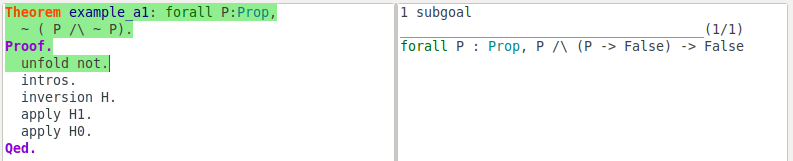
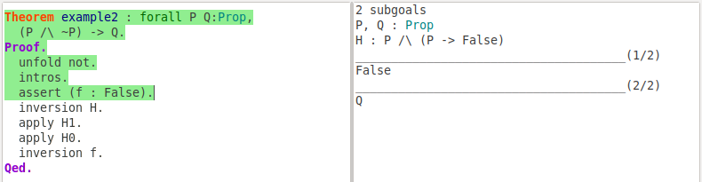
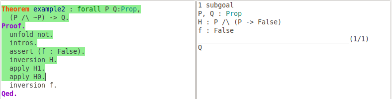
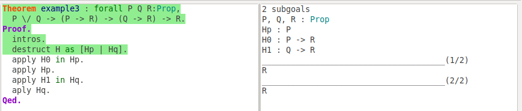
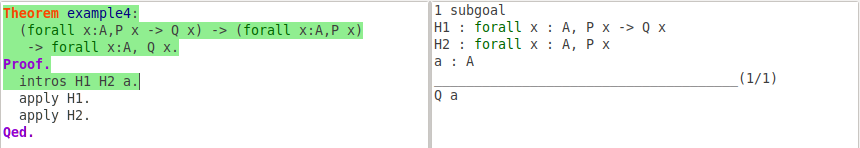
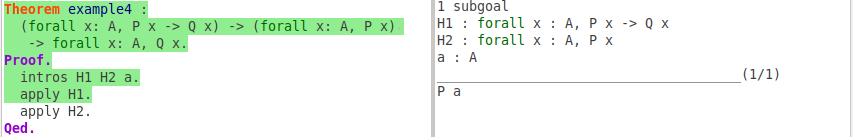
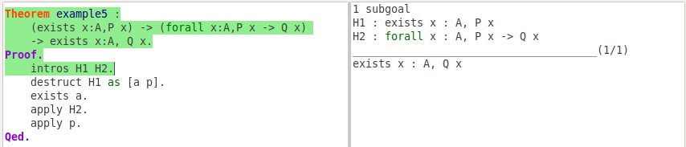
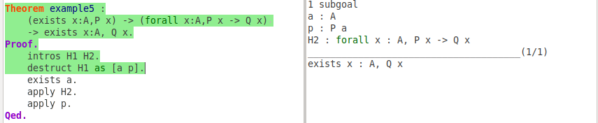
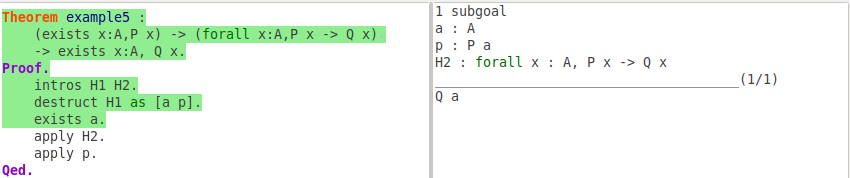
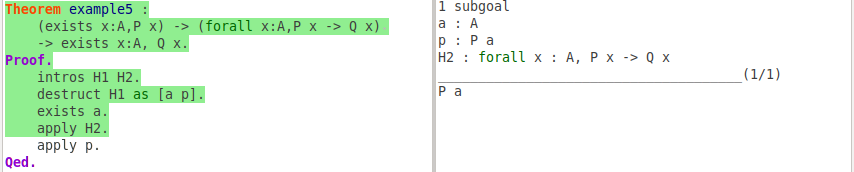

In logic or computer science, predicate logic is also known as first-order logic or quantificational logic, which extends the propositional logic with relations, expressions, and quantification. The word "predicate" is a statement that contains variables (predicate variables), and they may be true or false depending on the values of these variables. In other words, predicate logic allows the use of sentences that contain variables, so that make it possible to model more realistic problems. In this assignment, you'll engineer more proofs using Coq.
This assignment is divided into three parts, each of which contains both some tutorials and problems. In the first part, we will make some preparations by introducing more tactics from Coq, which will get you more familiarized with Coq proof techniques for first-order logic. The second part covers more proof engineering techniques for predicate logic by Coq; and in the third part, we will try more complicated proof problems. Some problems are tagged with Exercise, which you should solve. And several problems are tagged with Challenge, which are optional.
Before starting with this assignment, make sure you've finished assignment 1 and have Coq-ide properly installed on your computer.
When you finished the assignment, zip you code files with file name studentid-assignment4.zip (e.g SA19225111-assignment4.zip), and submit it to Postgraduate Information Platform. Any late submission will NOT be accepted.
We have learned several practical Coq tactics in assignment 2. In this section, we will try several additional proof strategies and tactics that allow us to prove more interesting theorems.
Coq uses symbol ~ to represent negation of a proposition. ~ P is a syntactic sugar for P -> False, and we can build theorems with negations like blow:
Theorem example_1: forall P: Prop,
~(P /\ ~P).
Proof.
unfold not.
intros.
inversion H.
apply H1.
apply H0.
Qed.
The unfold tactic replaces a term in the goal with its definition. For instance, in the above example, we use unfold not tactic to replaces ~ symbol in the goal.
Also, we can use unfold t in H to unfold the definition of t in the hypothesis with label H.
~(P \/ Q) -> ~P /\ ~Q
Sometimes, we need to prove our current goal from an intermediate goal. The assert or assert (h : H) tactic introduces H as a new subgoal; after you prove the new goal, you can use an assumption h : H to prove your original goal. Next is an example:
Theorem example2 : forall P Q: Prop,
(P /\ ~P) -> Q.
Proof.
unfold not.
intros.
assert (f : False).
inversion H.
apply H1.
apply H0.
contradiction.
Qed.
Obviously, proposition (P /\ ~P) is false, so it can imply any proposition. We need to introduce an intermediate goal: (P /\ ~P) is false.
Here, we get a new subgoal. After prove this subgoal, we can use it as new hypothesis to prove the original goal.
In assignment 2, we use the inversion tactic to break conjunction or a disjunction in hypothesis. There another more commonly used tactic to deal with conjunction and disjunction: the destruct tactic. This tactic replaces a hypothesis P /\ Q with two hypotheses P and Q. Alternatively, if the hypothesis is a disjunction P \/ Q, this tactic generates two subgoals: in one P holds and the in the other one Q holds. The tactic destruct can also generate a subgoal for every constructor of an inductive type.
Theorem example3 : forall P Q: Prop,
P \/ Q -> (P -> R) -> (Q -> R) -> R
Proof.
intros.
destruct H as [Hp | Hq].
apply H0 in Hp.
apply Hp.
apply H1 in Hq.
apply Hq.
Qed.

In most cases, the tactic destruct works same as inversion. You can use destruct H as [H1 H2] with conjunction and destruct H as [H1 | H2] with disjunction to make your proof more clear.
P /\ (Q \/ R) <-> (P /\ Q) \/ (P /\ R).
In this section, we'll learn how to prove predicate logic theorems using Coq. In Coq, we can declare set variables in the same way as we have declared propositional variables:
Variables A B: Set.
Here we declared both A and B to be variables for sets. Next we declare some predicate variables P and Q on the set A:
Variables P Q: A -> Prop.
You can think P and Q as functions taking element from A and returning a Prop. If we have an element of A set, e.g a: A, we can use P(a) to express a satisfy the property P. Using the same method, we can declare properties relating several elements. For example, we can introduce a relation R, relating A and B by:
Variable R : A -> B -> Prop.
Here R a b expresses a relation on a and b. You can think R as a function taking two parameters.
In Coq, the keyword forall is used to express universal quantification. We can write forall x: A, P x to express all elements of A satisfy the property P. And forall x: A, P x -> Q x means that any element of A that satisfies the property P will also satisfy the property Q.
Theorem example4 :
(forall x: A, P x -> Q x) -> (forall x: A, P x) -> forall x: A, Q x.
Proof.
intros H1 H2 a.
apply H1.
apply H2.
Qed.
We can think this example as a Syllogism, The major premise is "all A satisfying property P also satisfies Q", the minor premise is "all A satisfy property P", the conclusion is "all A satisfy Q".
We take several steps to prove this. In the first step, we use the tactic intros to do the introduction. After this step, we get a premise "a : A" along with two hypothesis H1 and H2. The tactic intro a introduces an assumption a: A where each free occurrence of x in the goal after forall is replaced by a. So we can see our goal become Q a.
We have hypothesis H1: forall x: A, P x -> Q x and we want to prove Q a, we can use apply H1 to instantiate the hypothesis H1 to P a -> Q a. This will eliminate the implication and we only need to prove P a. You can check document to understand how tactic apply exactly works here.
We do the elimination for forall in the last step. If we know H : forall x: A, P and we want to show P where x is replaced by a we use apply H2 to prove P a.

∀x.(~P(x) /\ Q(x)) -> ∀x.(P(x) -> Q(x))
∀x.(P(x) -> Q(x)) -> ∀x.~Q(x) -> ∀x.~P(x)
∀x.(P(x) /\ Q(x)) <-> (∀x.P(x) /\ ∀x.Q(x))
In Coq, the keyword exists is used to express existential quantification. We can write exists x: A, P x to express there is an element x of A having the property P. In the following example:
Theorem example5 :
(exists x: A, P x) -> (forall x: A, P x -> Q x) -> exists x: A, Q x.
Proof.
intros H1 H2.
destruct H1 as [a p].
exists a.
apply H2.
apply p.
Qed.

After introducing two hypothesis H1, H2 into context, we need to deal with exists symbol in the hypothesis and goal. The tactics for existential quantification are similar to the ones for conjunction. To prove existential statement exists x : A, Q x, we can assume that the value of x that satisfies the existence is a and replace all x in Q with a. In this theorem, we have hypothesis H1: exists x : A, P x, which can be destructed into two hypothesis: a : A and P : a.
Tactic exists a will replace all free occurences of "x" by "a" in the goal, it's the elimination of exists.
Last apply operation is same with example 4.

∃x.(~P(x) \/ Q(x)) -> ∃x.(~(P(x) /\ ~Q(x)))
∃x.(~P(x) /\ ~Q(x)) -> ∃x.~(P(x) /\ Q(x))
∃x.(P(x) \/ Q(x)) <-> (∃x.P(x) \/ ∃x.Q(x))
∃x.~P(x) -> ~(∀x.P(x))
∀x.(P(x) -> ~Q(x)) -> ~(∃x.(P(x) /\ Q(x)))
∀x.(P(x) -> Q(x)) /\ ∃x.P(x) -> ∃x.Q(x)
∃x.(P(x) /\ Q(x)) /\ ∀x.(P(x) -> R(x)) -> ∃x.(R(x) /\ Q(x))
∃x.∃y.P(x, y) -> ∃y.∃x.P(x, y)
P(b) /\ (∀x.∀y.(P(x) /\ P(y) -> x = y)) -> (∀x.(P(x) <-> x = b))
You may need use rewrite tactic to solve it, read the document .
This completes this assignment. Remember to zip you homework with file name studentid-assignment4.zip (e.g SA19225111-assignment4 .zip), and submit it to Postgraduate Information Platform.
Happy hacking!